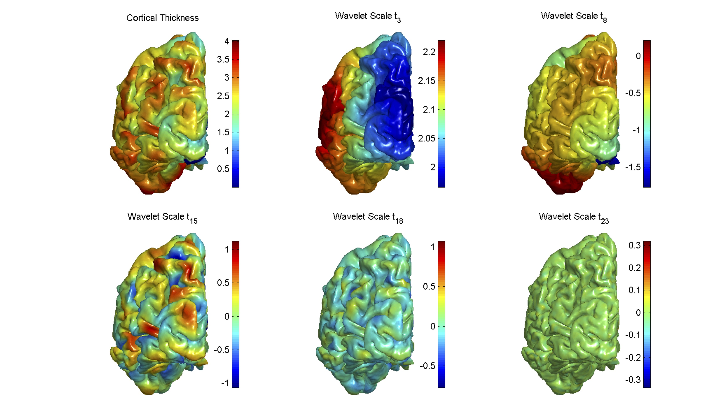

Spectral Laplace-Beltrami Wavelets
Download Matlab Toolbox
The Spectral Laplace-Beltrami Wavelets is a technique for computing wavelet transforms of functions defined on differentiable and closed 2-manifolds. It is inspired by the Spectral Graph Wavelet Transform (SGWT) from which its capabilities were extended from arbitrary graphs to triangular meshes. The proposed technique replaces the graph-Laplacian with a discretized Laplace-Beltrami operator that captures, in addition to the nodes and edges, geometric information such as the intrinsic curvature of the underlying surfaces.

Figure1. Visualisation of spectral Laplace-Beltrami wavelet bases at decreasing scales (from left to right along each row) on the cortical surface (top row) and hippocampal surface (bottom row).

Figure 2. The first panel on the top left is the cortical thickness function plotted on the cortical surface. The subsequent panels show wavelet coefficients at decreasing scales from left to right.
Applications: The wavelet coefficients computed can be used to detect high frequency differences (edge detection) or reconstructed with low-pass filters to function as a smoothing operator. Wavelet coefficients, computed at different scales, can also be used as multiresolution input features of pattern recognition/classification algorithms. For example, a classifier constructed from a mix of hippocampi shapes was used to differentiate between normal subjects and those afflicted with Alzheimer’s disease.
This toolbox also provides examples for edge detection, wavelet transform, and visualization (see readme.pdf).
Reference
[1] Tan, Mingzhen, and Anqi Qiu. "Spectral laplace-beltrami wavelets with applications in medical images." IEEE transactions on medical imaging 34.5 (2015): 1005-1017.